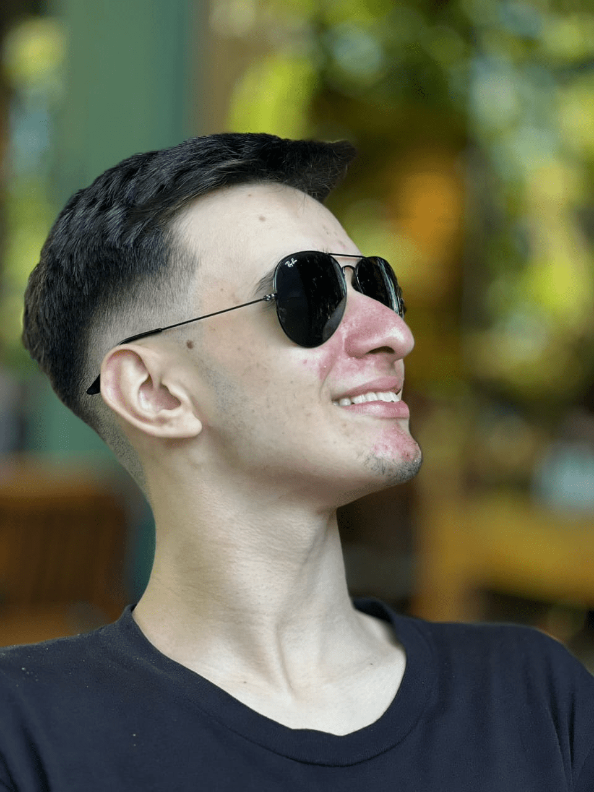

Minhas Matérias.
Matemática
Atividades de Matemática
Linguagens
Atividades de Linguagens
Humanas
Atividades de Humanas
Natureza
Atividades de Natureza
Técnico
Atividades do Técnico

Olá, meu nome é Lucas Rodrigues.
Estudo no SESI/SENAI, onde me dedico a diversas áreas de conhecimento, incluindo Matemática, Linguagens, Humanas, Natureza, e Técnico.Tenho 19 anos saci e fui criado em Florianopolis
Versão em inglês
I study at SESI/SENAI, where I am dedicated to various fields of knowledge, including Mathematics, Languages, Humanities, Natural Sciences, and Technical Studies. I'm 19 years old and was raised in Florianópolis.